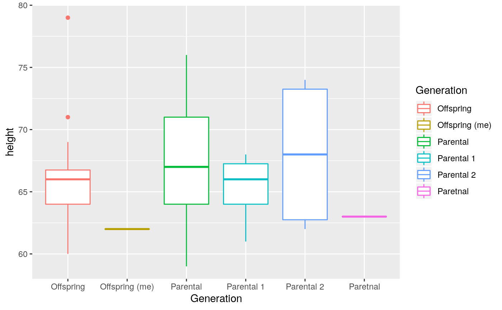

WeekTwo
WeekTwo.RmdVariation
As homework, you all entered your height and the height of your parents. This week, we’ll take a look at the variability in the trait height.
## ── Attaching packages ─────────────────────────────────────────────────────────────────── tidyverse 1.3.0 ──## ✓ ggplot2 3.2.1 ✓ purrr 0.3.3
## ✓ tibble 2.1.3 ✓ dplyr 0.8.3
## ✓ tidyr 1.0.0 ✓ stringr 1.4.0
## ✓ readr 1.3.1 ✓ forcats 0.4.0## ── Conflicts ────────────────────────────────────────────────────────────────────── tidyverse_conflicts() ──
## x dplyr::filter() masks stats::filter()
## x dplyr::lag() masks stats::lag()## Parsed with column specification:
## cols(
## height = col_double(),
## generation = col_character()
## )Let’s try plotting the data:

What are your observations about these two distributions? Write down two things you notice:
# Answer Here
Try plotting the data as a boxplot.

What are the lines on a boxplot? If you calculate the means of your heights and your parents, does this mean reflect what you see on the graph:
## # A tibble: 2 x 2
## generation mean_hgt
## <chr> <dbl>
## 1 Parents 62.8
## 2 You 66.4Does this change the way you feel about either of your two observations above?
# Answer here
By eye, would you say these two groups are different?
Answer hereLet’s put this to the test. In the study of biology, we can quantify differences between groups using a Chi-Squared test. The Chi-Squared test allows us to tell if two or more groups are really different. It uses the distribution of data points to tell this information. For example, our boxplots overlap a little, but not all the way. Is that overlap significant? A Chi-Square test lets us tell. We can then calculate a P-value. This value tells us, if the groups are actually identical, how likely we would be to observe a difference. If your generation has the same distribution of heights, how likely are we to observe these differences.
heights %>%
group_by(generation) %>%
ungroup %>%
summarise(pval = chisq.test(height, generation)$p.value)## Warning in chisq.test(height, generation): Chi-squared approximation may be
## incorrect## # A tibble: 1 x 1
## pval
## <dbl>
## 1 0.000168